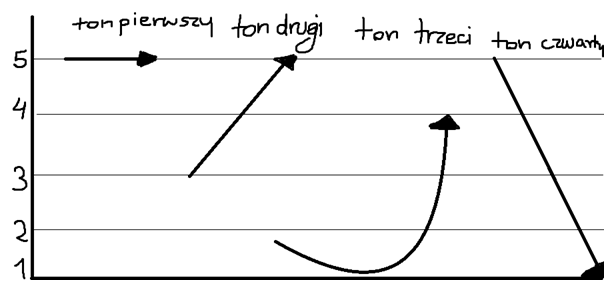

Tony i pīnyīn
Rozdział 1 Lekcja 1
Tak więc, język chiński jest językiem tonalnym, czyli posiada konkretny sposób wymawiania samogłosek czyli np. a, e, i, o, u. Posiada on 4 tony, które przedstawia się na wykresie, z pięciostopniową skalą wysokości dźwięku.  Istnieje zapis chińskiego w naszym alfabecie nazywany pīnyīn (拼音) , gdzie tony reprezentuje się nad samogłoską, np. ā á ǎ à. Spółgłoski są także istotne. W tym zapisie większość jest podobna do polskiego lub też angielskiego jeśli chodzi o fonetykę, lub inaczej brzmienie. Są także różnice, które opiszemy razem z tymi, które od razu będziecie wiedzieli.
| b | p | m | f |
| d | t | n | l |
| g | h | h | |
| j | q | x | |
| z | c | s | |
| zh | ch | sh | r |
mā má mǎ mà
bō bó bǒ bò
kuō kuó kuǒ kuò
chē ché chě chè
gēn gén gěn gèn
shān shán shǎn shàn
jiā jiá jiǎ jià
dāo dáo dǎo dào
lāo láo lǎo lào
guā guá guǎ guà
huī huí huǐ huì
xiē xié xiě xiè
zhāng zháng zhǎng zhàng
cāng cáng cǎng càng